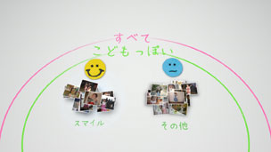
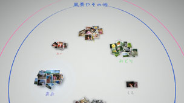

写真を整理する
写真を分類する
選んだイベントの写真を次の項目で分類します。イベントを選んで ボタンを押し、
ボタンを押し、 （分類）を選びます。分類したあとにもう1度（分類）を選ぶと、写真をさらに絞り込むことができます。
（分類）を選びます。分類したあとにもう1度（分類）を選ぶと、写真をさらに絞り込むことができます。
| 時間 | 撮影した日付と時間で分類する |
|---|---|
| かおの数 | 被写体の顔の数、大きさで分類する |
| こどもっぽさ | 赤ちゃんぽい写真、こどもっぽい写真、大人っぽい写真で分類する |
| スマイル | 笑顔とその他で分類する |
| カラー | 写真の色味で分類する |
| カメラ | 撮影したカメラで分類する |
| ゲーム | ゲームのスクリーンショットとその他で分類する |
| アルバム | XMB™の （フォト）で設定したアルバムごとに分類する （フォト）で設定したアルバムごとに分類する |
ヒント
- 分類の項目を選ぶ画面で［すべて選択］にチェックすると、ライブラリーエリアにあるすべての写真が分類の対象になります。
- 写真によっては、正確に分類されない場合があります。
- 分類した写真からプレイリストを作ることができます。
分類の例：子どもが笑顔で写っている写真を集める
1. |
|
|---|---|
2. |
［こどもっぽい］に集まった写真を選んで |
3. |
 |
分類の例：青空の写真を探す
1. |
|
|---|---|
2. |
［風景やその他］に集まった写真を選んで |
3. |
 |
写真を削除する
削除したい写真、またはアルバムを選んでボタンを押し、 （削除）を選びます。
（削除）を選びます。
ヒント
削除した写真は、PS3™の本体ストレージからも削除されます。